Je ne cherche pas des leads au hasard
Dans cette séance, je veux construire une base de prospects utilisable. Le but n'est pas d'ouvrir Google, taper un métier, prendre trois contacts, puis appeler ça une prospection. Je pars de mon étude de marché et de ma stratégie SEO/GEO. Ces fichiers me disent qui viser, pourquoi les viser et quels problèmes je peux résoudre. Serper sert ensuite à passer du raisonnement à une vraie base de données.
L'étude de marché dit qui viser. Serper trouve les entreprises. Le scoring dit qui contacter en premier.
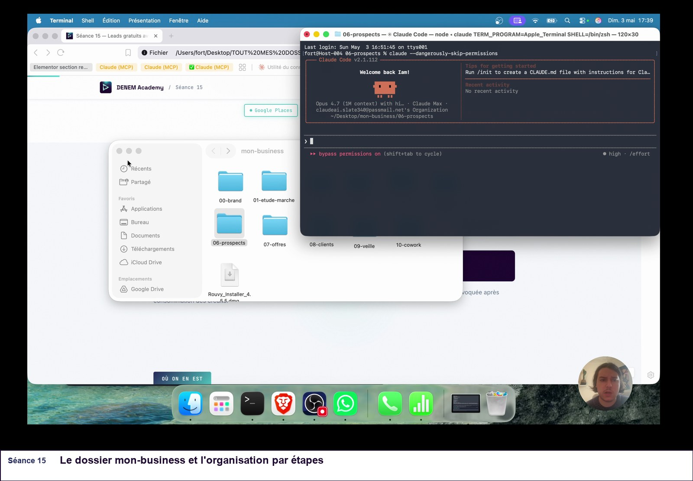
Le dossier mon-business garde toute la logique
Je garde un dossier unique pour le business. Il contient la marque, l'étude de marché, le site, les audits, les offres, les prospects et les clients. Quand je lance Claude Code ou Codex, je veux que l'agent comprenne le contexte complet. Si les fichiers sont dispersés, l'agent travaille avec une vision trop courte.
La base de l'identité.
La cible et les pains.
Le site et l'audit SEO/GEO.
La base de leads.
06-prospects devient le poste de travail
Je crée ou j'ouvre le dossier `06-prospects` parce que cette séance appartient à l'acquisition. Ce dossier reçoit les fichiers utiles : Excel, CSV, rapport, prompts, notes et éventuellement les exports. Je ne veux pas que les résultats restent cachés dans un dossier temporaire que je ne retrouve plus.
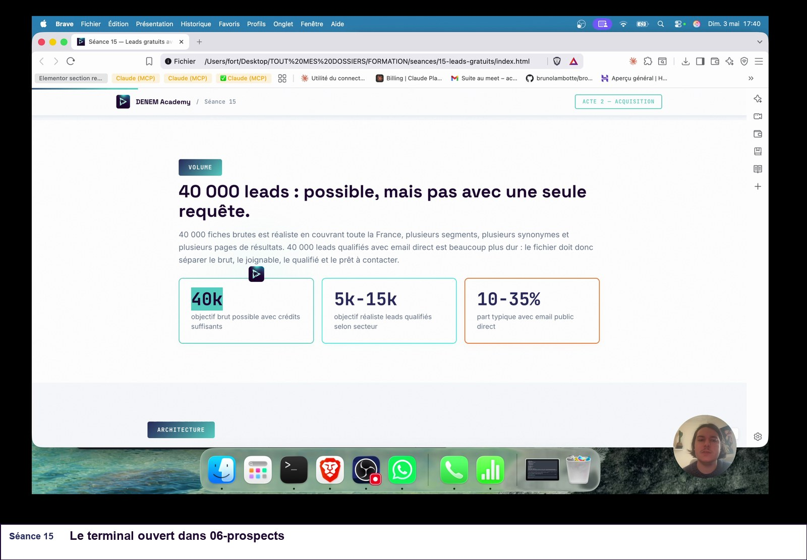
- Ouvrir `mon-business`.
- Entrer dans `06-prospects`.
- Lancer le terminal ici.
- Vérifier que le prompt travaille dans ce dossier.
Le résultat attendu est concret
À la fin, je veux un fichier `leads-massif.xlsx`, un CSV, un rapport MD et une base structurée. Le fichier ne doit pas juste contenir des noms. Il doit contenir un score, un segment, une ville, un site, un email quand il existe, un téléphone, les sources, les signaux de douleur et un angle de message.
Pour filtrer, trier et décider.
Pour importer dans un CRM ou un outil no-code.
Pour lire la synthèse sans ouvrir Excel.
Pour garder les preuves et les réponses API.
Je garde l'exemple restauration
Dans l'exemple, le business aide les restaurants avec l'IA. Je cible donc des restaurants, brasseries, bistrots, petites chaînes, traiteurs et lieux de privatisation. Je ne cherche pas seulement des fiches Google. Je cherche des entreprises qui ont peut-être un problème d'appels, de réservation, d'avis, de temps perdu ou de suivi client.
| Segment | Pourquoi il m'intéresse | Signal à chercher |
|---|---|---|
| Brasserie | Volume fort et besoin opérationnel | Avis, téléphone, réservation |
| Bistronomie | Ticket moyen plus élevé | Réputation, expérience client |
| Traiteur | Devis et demandes entrantes | Formulaire, privatisation |
| Petite chaîne | Budget et répétition | Multi-sites, recrutement |
Gratuit ne veut pas dire sans coût
On parle de leads gratuits parce qu'on ne paie pas un fichier tout prêt. Mais il y a quand même un coût : les crédits Serper, le temps de contrôle, la qualité des prompts et la vérification manuelle. Le vrai avantage, c'est que je garde la méthode. Je peux la relancer sur un autre marché plus tard.
Ne confonds pas gratuit et magique. Une base de leads utile demande une stratégie, une déduplication et un scoring.
Les fichiers d'avant servent de boussole
Je demande à l'agent de lire `01-etude-marche/etude-marche.md` et `02-site/audits-seo/strategie.md`. Ces fichiers évitent une erreur classique : collecter tout ce qui ressemble à un restaurant. Je veux des leads alignés avec mon offre, pas une liste trop large que je ne saurai pas traiter.
L'erreur classique : commencer par l'API
Si je lance Serper trop vite, l'agent dépense les crédits avant de comprendre le marché. Il peut récupérer des milliers de résultats, mais beaucoup seront inutiles. Je bloque donc l'appel API au début du prompt : pas de Serper avant un brief cible clair.
Je lance 200 requêtes sans savoir quoi chercher.
Je définis ICP, segments, douleurs, villes, exclusions, puis seulement je lance l'API.
La bonne question n'est pas “où trouver des leads ?”
La bonne question est : quelles entreprises ont un problème visible, un budget probable, un décideur accessible et un intérêt logique pour mon offre ? Cette question change tout. Elle force à chercher des signaux, pas seulement des coordonnées.
Un email n'est pas un bon lead. Un bon lead est une entreprise avec un problème, une source et une raison de te répondre.
Je définis les preuves de réussite
Je veux pouvoir vérifier le travail sans croire l'agent sur parole. Les preuves sont simples : fichiers créés, logs, nombre d'appels, nombre de leads, taux de doublons, emails plausibles, scores cohérents et sources conservées. Si une preuve manque, je corrige.
Le dossier contient les exports.
Le ledger liste les requêtes.
Les meilleurs leads ont une source.
La clé API n'apparaît pas dans les fichiers.
Serper expliqué simplement
Serper donne accès aux résultats Google via API. Au lieu de copier-coller les résultats à la main, je demande à l'agent de faire des requêtes structurées, de récupérer les données, de les ranger et de les analyser. Ce n'est pas un CRM. Ce n'est pas un scraper magique. C'est une porte d'entrée propre vers Search, Places et Reviews.
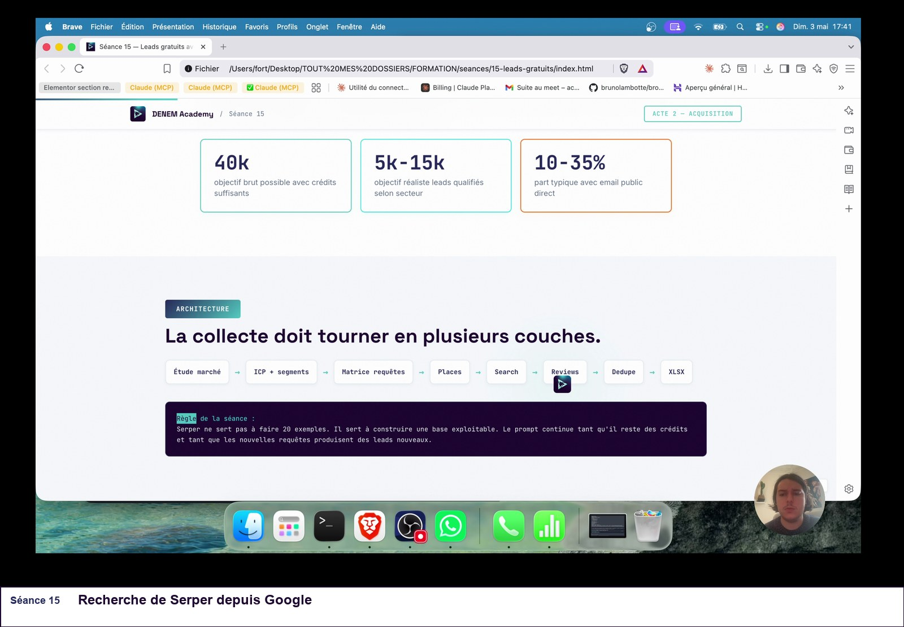
Serper est utile quand tu sais déjà quoi chercher. Il devient mauvais quand tu lui demandes de deviner ton marché.
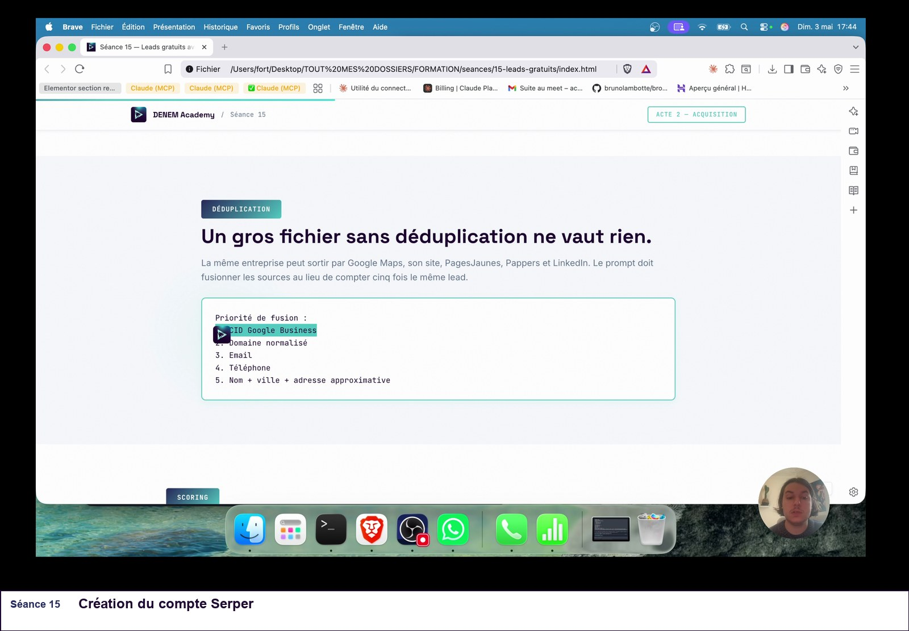
Search sert à trouver les pages et les contacts
L'endpoint Search renvoie des résultats Google classiques. Je l'utilise pour trouver des pages contact, des mentions légales, des annuaires, des sites avec email visible dans le snippet, et des pages qui parlent de réservation, privatisation ou devis.
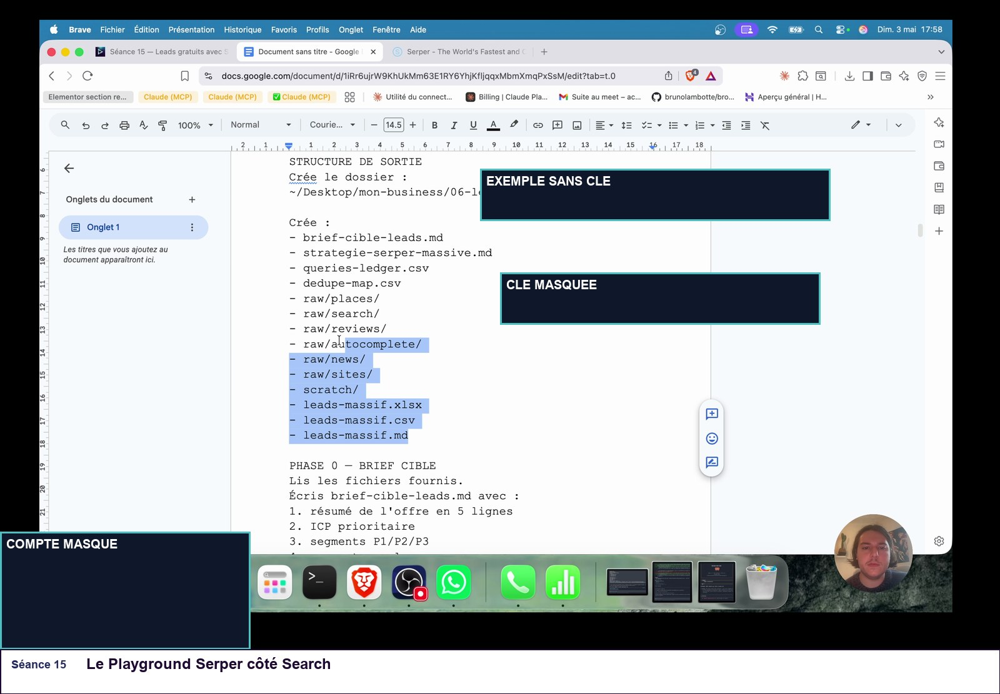
{
"q": "restaurant lyon contact email site:restaurant OR site:fr",
"gl": "fr",
"hl": "fr",
"num": 5
}Places sert à créer le volume local
L'endpoint Places remonte les fiches Google Business : nom, adresse, catégorie, note, nombre d'avis, site web et CID. C'est la base pour créer du volume sur des villes et des segments. Je ne m'attends pas à obtenir tous les emails ici. Je m'attends à construire une base large.
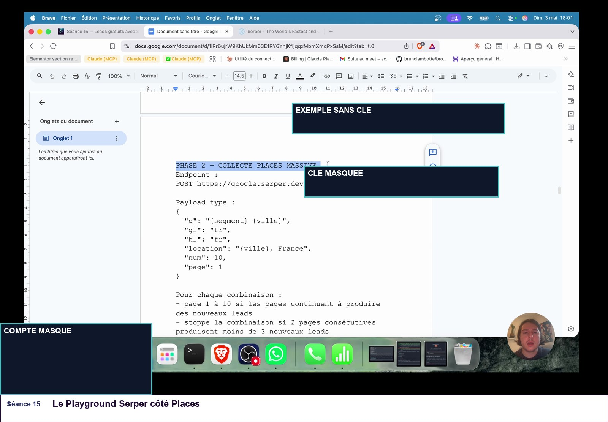
{
"q": "restaurants lyon",
"gl": "fr",
"hl": "fr",
"location": "Lyon, Auvergne-Rhône-Alpes, France",
"num": 10,
"page": 1
}Reviews sert à trouver les douleurs
L'endpoint Reviews prend le CID d'une fiche Google et récupère des avis. Je ne lis pas les avis pour juger le restaurant. Je les lis pour détecter des problèmes vendables : attente, téléphone, réservation, organisation, annulation, service, avis négatifs ou demandes de groupe.
{
"cid": "CID_GOOGLE_BUSINESS",
"gl": "fr",
"hl": "fr",
"num": 10
}Autocomplete relance la recherche quand elle s'essouffle
Quand une requête produit trop de doublons, je demande à l'agent de chercher des variantes. Autocomplete aide à trouver des synonymes, des formulations et des catégories que je n'avais pas prévues. C'est utile en fin de collecte, pas au début.
restaurant privatisation paris
restaurant groupe paris
brasserie événement paris
Trouver un angle moins saturé
News est optionnel
Je peux utiliser News pour détecter des signaux frais : ouverture, recrutement, événement, levée, changement de direction. Mais ce n'est pas le cœur de la séance. Pour une base massive, Places et Search font déjà l'essentiel.
Ne multiplie pas les endpoints pour faire joli. Chaque endpoint doit apporter une donnée utile.
Places seul ne suffit pas
Places donne beaucoup d'entreprises, mais pas toujours l'email, pas toujours le décideur, pas toujours l'angle de message. Si je m'arrête à Places, j'ai une base large mais parfois froide. Il faut ensuite enrichir avec Search et les sites publics.
Une fiche Google avec nom, adresse, note.
Une fiche enrichie avec site, email, téléphone, douleurs, score et source.
Search seul ne suffit pas non plus
Search peut trouver des emails et des pages contact, mais il rate souvent des établissements très locaux visibles dans Maps. Il peut aussi sortir des pages trop anciennes ou des annuaires peu propres. Je croise donc Search avec Places.
| Endpoint | Force | Limite |
|---|---|---|
| Places | Volume local | Peu d'emails |
| Search | Contacts et sources | Moins fiable sur le local |
| Reviews | Douleurs | À réserver aux meilleurs leads |
Le CID est une clé de travail
Le CID identifie une fiche Google Business. Quand je l'ai, je peux relier la fiche Places aux reviews. Ça évite de chercher les avis à la main et ça permet de garder la source du signal.
Si un lead a un CID, garde-le. Il sert souvent plus tard pour enrichir la fiche sans repartir de zéro.
Je surveille les crédits comme un budget
Serper consomme des crédits. Je ne veux pas que l'agent dépense tout pour des requêtes inutiles. Le prompt impose un plafond prudent, un cache raw et un ledger. C'est ce qui transforme une exploration en opération contrôlée.
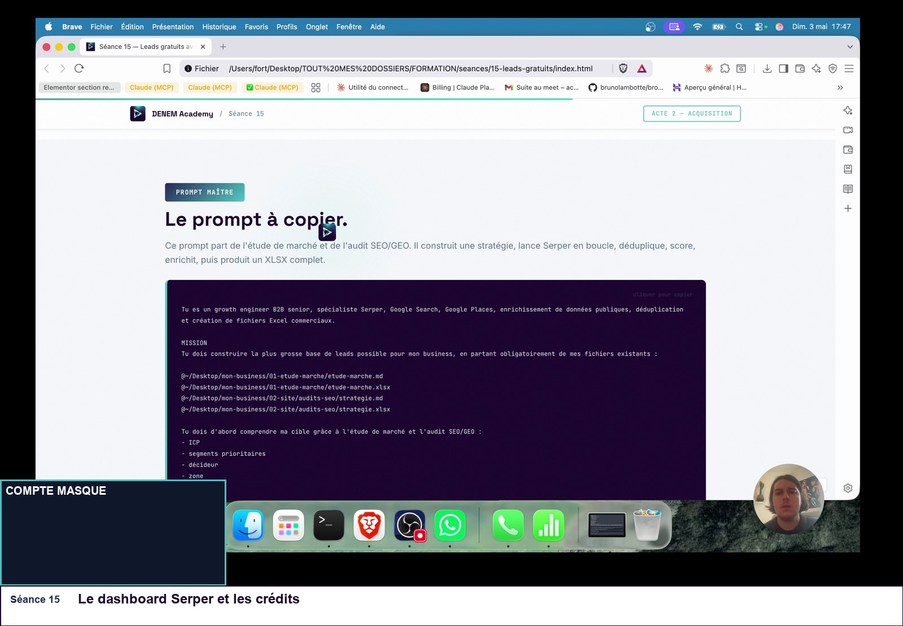
Nombre d'appels connu
Réponses cachées dans raw/
Requête identique jamais relancée
Arrêt si le taux de nouveaux leads chute
La clé API reste temporaire
Dans la séance, la clé est collée dans le prompt pour éviter de gérer une variable d'environnement. C'est pratique pour apprendre, mais je ne publie jamais une vraie clé. Après le run, elle doit être révoquée ou remplacée.
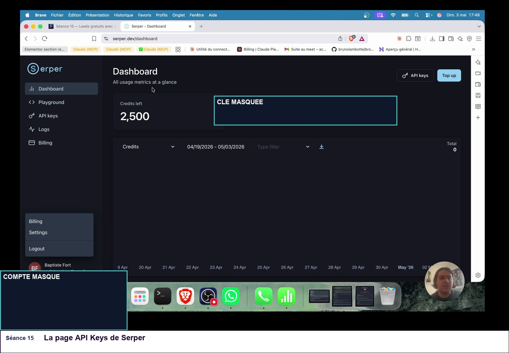
SERPER_API_KEY = "COLLE_TA_CLE_SERPER_ICI"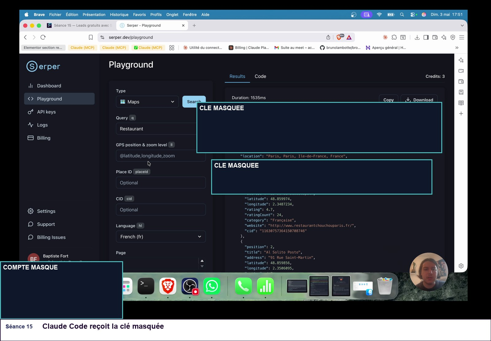
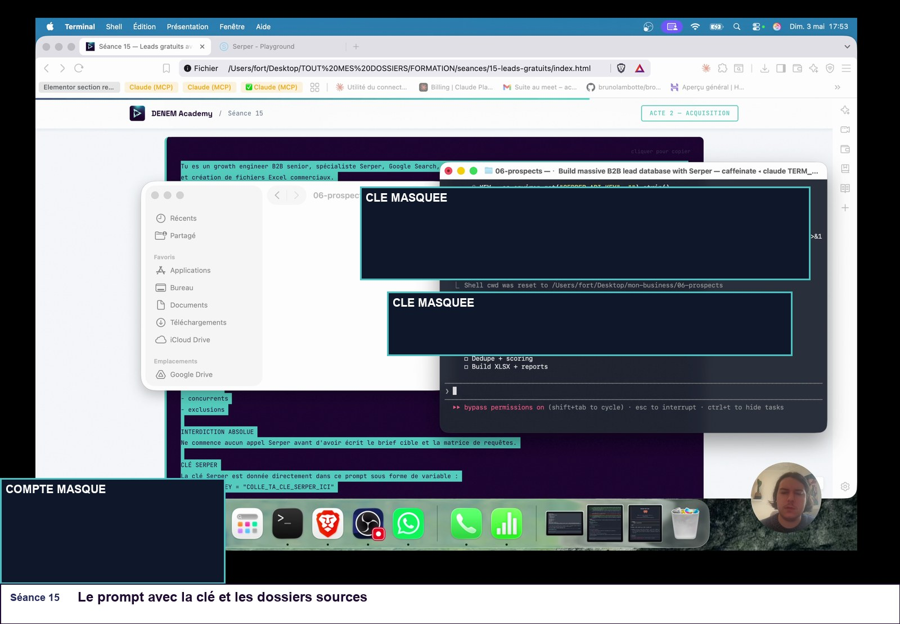
Je ne pousse jamais une clé sur GitHub
Le support public remplace toutes les clés par un placeholder. C'est une règle non négociable. Une clé API dans un repo public peut être copiée, utilisée et facturée. Même si les crédits sont faibles, je masque.
Avant de publier, je cherche la clé dans le HTML, la transcription, les prompts et les images. Si je la trouve, je ne publie pas.
J'ouvre le terminal au bon endroit
Je lance le terminal depuis `06-prospects`. Ça permet à Claude Code de créer les fichiers dans le bon espace et de copier les exports au bon endroit. Le terminal est un détail qui change tout : mauvais dossier, mauvais livrable.
cd ~/Desktop/mon-business/06-prospects
claude --dangerously-skip-permissionsLe mode permissions fortes doit rester cadré
Je peux lancer Claude Code avec des permissions très larges pour gagner du temps. Mais je le fais seulement dans un dossier de projet que je comprends. Si le dossier contient des secrets, des fichiers clients ou un repo sensible, je réduis le niveau d'autorisation.
Le mode rapide ne remplace pas ton jugement. Tu dois savoir ce que l'agent a le droit de modifier.
Je donne les chemins exacts
Le prompt indique les fichiers à lire. Je ne dis pas juste “regarde mon business”. Je donne les chemins : étude de marché, stratégie SEO/GEO et éventuellement brandbook. Un agent travaille mieux quand il sait où regarder.
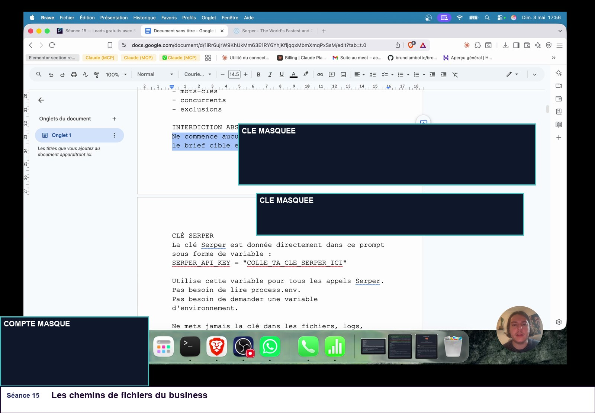
Comprendre la cible.
Comprendre les problèmes vendables.
Garder le ton.
Livrer au bon endroit.
Le brief cible passe avant l'API
Je demande un brief cible avant toute requête. Ce brief doit préciser l'offre, l'ICP, les segments P1 à P5, les exclusions, les douleurs, les signaux d'achat et les zones. C'est l'étape qui évite de dépenser des crédits dans le vide.
L'ICP doit être exploitable par une API
Un ICP vague ne sert pas à Serper. “Restaurants intéressants” ne veut rien dire. Je dois transformer l'ICP en mots cherchables : brasserie, bistrot, restaurant gastronomique, traiteur, privatisation, ville, quartier, réservation, contact, mentions légales.
Je cible les restaurants qui ont besoin d'IA.
Je cible les brasseries urbaines avec avis nombreux, site actif, réservation, appels et pages contact.
Je cherche des douleurs visibles publiquement
Je ne peux pas lire l'intérieur du business. Je cherche donc des signes publics : mauvais avis, forte activité, formulaire absent, outil de réservation, téléphone, pages de groupe, recrutement, horaires étendus, événements, multi-sites.
Clients qui n'arrivent pas à joindre.
Annulation, attente, no-show.
Réputation et frustration.
Privatisation et devis.
La zone fait exploser le volume
Une ville donne quelques centaines de résultats. Une matrice villes x segments x pages peut monter beaucoup plus haut. Je commence par les zones prioritaires, puis j'étends si les premiers résultats sont bons.
| Niveau | Exemple | Utilisation |
|---|---|---|
| Ville | Lyon | Premier test rapide |
| Région | Île-de-France | Volume plus large |
| Quartier | Paris 11 | Recherche fine |
| Zone premium | Bord de mer | Signal business |
Je valide le brief avant les crédits
Quand l'agent propose le brief, je dois le lire. Si les segments sont hors cible, je corrige maintenant. Si les zones sont trop larges, je réduis. Si les douleurs sont floues, je demande des signaux mesurables.
Les segments correspondent à l'offre.
Les exclusions sont présentes.
Les douleurs peuvent être trouvées publiquement.
La stratégie d'appel API est claire.
Le prompt maître est une fiche de mission
Le prompt maître ne se contente pas de dire “trouve des leads”. Il donne un rôle, une mission, des fichiers, des endpoints, des règles, un objectif quantitatif, une structure de sortie, des phases, une méthode de scoring et un message final attendu.
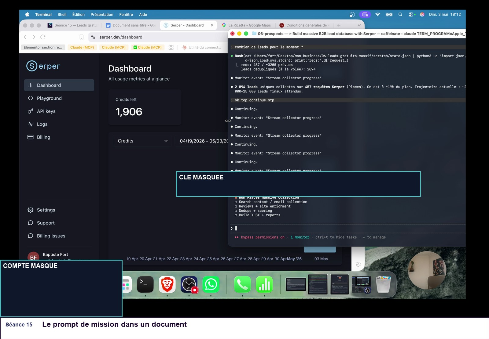
Quand un prompt est long, ce n'est pas pour impressionner. C'est pour éviter les zones grises.
Le rôle donne le niveau attendu
Je demande un growth engineer B2B senior, spécialiste Serper, Google Search, Google Places, scoring et fichiers commerciaux. Ce rôle indique que l'agent doit penser collecte, qualité, déduplication et action commerciale.
Tu es un growth engineer B2B senior, spécialiste Serper, Google Search, Google Places, enrichissement de données publiques, déduplication et création de fichiers Excel commerciaux.La mission parle de base actionnable
Je ne demande pas une liste. Je demande une base massive, dédupliquée, scorée et actionnable. Ces quatre mots obligent l'agent à penser plus loin que la collecte brute.
Plusieurs tours, pas 20 exemples.
Une entreprise ne compte qu'une fois.
Je sais qui traiter d'abord.
Je peux contacter ou importer.
Les règles de données protègent le projet
Je limite la collecte aux données publiques B2B. Pas de login, pas de captcha, pas de contournement, pas de données sensibles. Je garde les sources pour justifier ce que je mets dans la base.
Une base propre vaut mieux qu'une base énorme impossible à exploiter ou à expliquer.
L'objectif quantitatif évite le faux livrable
Sans objectif, l'agent peut s'arrêter après quelques résultats. Je précise qu'il doit chercher le maximum possible, avec des conditions d'arrêt : saturation, plafond prudent ou volume suffisant. C'est ce qui force la boucle.
| Condition | Pourquoi | Décision |
|---|---|---|
| Deux tours sous 10% | La collecte sature | Arrêter |
| 250 appels | Budget prudent | Arrêter ou valider |
| 1500 bruts / 500 qualifiés | Volume suffisant | Exporter |
| Crédits faibles | Risque budget | Contrôler |
Je demande les fichiers dès le départ
Le prompt crée une structure claire : brief, stratégie, ledger, Excel, CSV, rapport, raw et scratch. L'agent ne doit pas finir avec des fichiers éparpillés. Tout doit être retrouvable.
Phase 0 : comprendre avant d'appeler Serper
Cette phase transforme les fichiers du business en plan de collecte. Elle produit l'ICP, les segments, les exclusions, les douleurs, les signaux, les villes et les catégories Google Places. Sans ça, la suite est trop large.
- Lire les fichiers business.
- Synthétiser l'offre.
- Classer les segments.
- Lister les zones.
- Définir les requêtes initiales.
Phase 1 : construire la matrice de requêtes
La matrice est le moteur. Elle combine segments, villes, douleurs, sources verticales et opérateurs Google. Je veux des requêtes qui explorent, mais aussi des requêtes qui ramènent des contacts et des preuves.
"{segment}" "{ville}" "contact"
site:pappers.fr "{segment}" "{ville}"
site:linkedin.com/company "{segment}" "{ville}"
"{douleur}" "{segment}" "{ville}"Phase 2 : Places large
Je lance Places sur les couples catégorie x zone. L'objectif est de créer le socle local. Je pagine tant que chaque page apporte des nouveaux leads. Si une page devient pleine de doublons, je coupe ce couple.
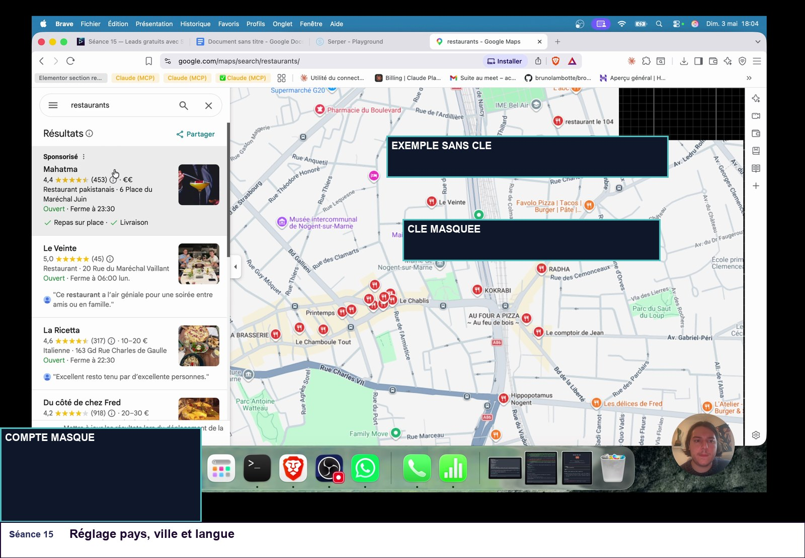
Places donne souvent le meilleur volume. Mais volume ne veut pas dire priorité commerciale.
Phase 3 : Search contact
Search complète Places. Je cherche contact, contact@, mentions légales, SIRET, réservation, privatisation et devis. Les snippets peuvent parfois contenir directement un email ou un téléphone.
"restaurant" "lyon" "contact@"
"brasserie" "paris" "mentions légales"
"traiteur" "marseille" "devis"Phase 4 : enrichir les sites publics
Quand un lead a un site, l'agent peut visiter les pages évidentes : contact, mentions légales, réservation, privatisation, groupes. Il ne force rien. S'il y a blocage, il passe au lead suivant.
Ne force jamais un site qui bloque. La règle est simple : public, accessible, propre.
Phase 5 : Reviews sur les meilleurs leads
Je ne lance pas Reviews sur toute la base. Je le réserve aux leads qui ont déjà un score intéressant. Les avis servent à personnaliser : si plusieurs clients parlent d'attente au téléphone, l'angle devient plus précis.
Agent vocal ou standard IA.
Automatisation ou rappel.
Réputation et réponse client.
Devis et suivi commercial.
Tour 1 : comprendre la cible
Le premier tour ne collecte pas. Il structure. Je veux que l'agent lise, déduise et propose. Cette étape est souvent moins spectaculaire, mais c'est celle qui évite la mauvaise base.
- Lire les fichiers.
- Écrire le brief.
- Valider les segments.
- Préparer les requêtes.
Tour 2 : lancer Places
Je collecte les fiches Google Business par segment et par ville. Je récupère les champs qui serviront au scoring : catégorie, ville, site, note, nombre d'avis, prix, CID et adresse.
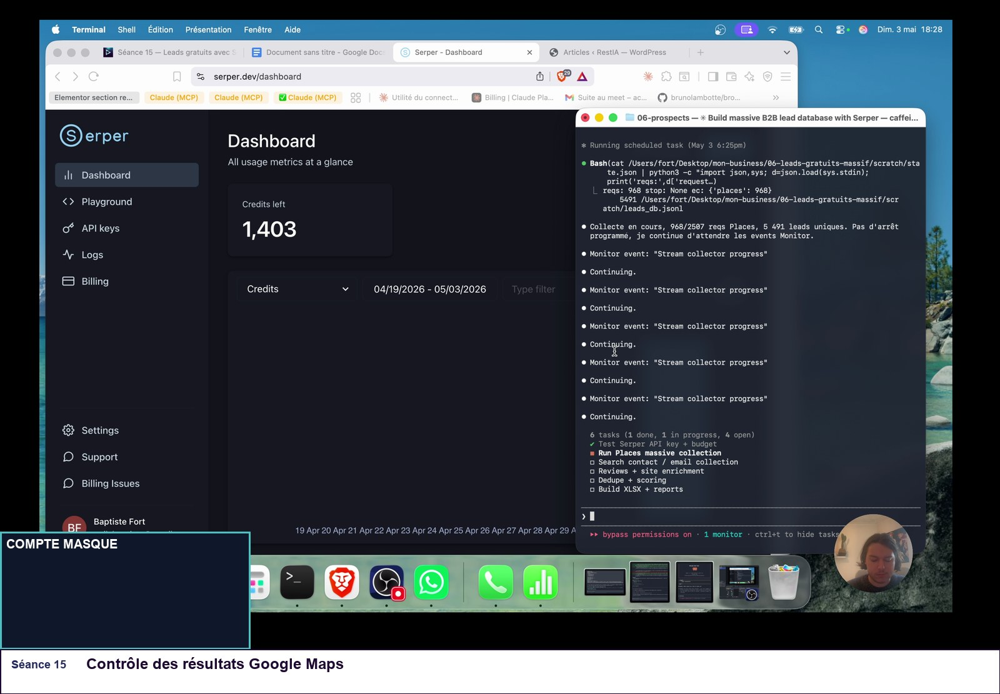
| Champ | Utilité |
|---|---|
| website | Enrichissement contact |
| ratingCount | Signal de visibilité |
| cid | Reviews |
| category | Segment |
| city | Zone |
Tour 3 : chercher les contacts
Je lance les requêtes Search pour trouver les pages contact et les mentions légales. C'est ici que les emails publics peuvent apparaître. L'agent normalise les formats `contact [a] domaine.fr` ou `contact(at)domaine.fr`.
[A-Z0-9._%+-]+@[A-Z0-9.-]+\.[A-Z]{2,}Tour 4 : utiliser les opérateurs Google
Les opérateurs rendent Search plus précis. `site:pappers.fr`, `site:societe.com`, `site:linkedin.com/company`, `intitle:contact` et `mentions légales` peuvent faire remonter des pages que la recherche simple ne sort pas.
Infos société.
Page entreprise.
Page contact.
Email ou société.
Tour 5 : regarder les sources verticales
Les annuaires spécialisés peuvent compléter la base. Je ne les utilise pas aveuglément. Je regarde s'ils apportent des leads nouveaux, des emails, des sites ou des catégories plus fines.
| Source | Ce que je cherche | Limite |
|---|---|---|
| PagesJaunes | Téléphone, adresse | Doublons |
| Pappers | Société, SIRET | Pas toujours commercial |
| TheFork | Réservation | Pas tous les restaurants |
| Entreprise | Peu d'emails |
Tour 6 : détecter la maturité digitale
Je cherche des signaux qui montrent qu'une entreprise comprend déjà le digital : réservation en ligne, site propre, réseaux sociaux, multi-sites, avis nombreux, recrutement ou page privatisation.
Tour 7 : enrichir avec les avis
Les avis ne doivent pas être copiés brutalement dans un message. Je les utilise comme signal. Je paraphrase les douleurs et je garde une preuve courte. Le message final doit rester respectueux.
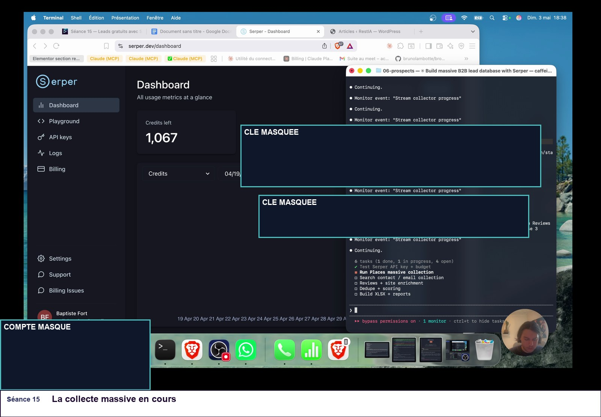
Ne cite pas un avis client pour attaquer l'entreprise. Utilise le signal pour proposer une aide concrète.
Tour 8 : chercher la saturation
La saturation arrive quand les nouvelles requêtes ramènent surtout des doublons. À ce moment-là, je demande à l'agent d'analyser les trous : villes faibles, segments rentables, requêtes avec emails, catégories sous-exploitées.
Nouveaux leads sous 10%
Trop de doublons
Peu d'emails nouveaux
Même villes qui reviennent
Crédits restants faibles
Je ne relance jamais la même requête
Chaque réponse API doit être stockée dans `raw/`. Avant d'appeler Serper, l'agent vérifie si la réponse existe déjà. Ça évite de brûler des crédits pour récupérer la même chose.
Le cache transforme Serper en système contrôlable. Sans cache, tu ne sais pas ce qui a déjà été consommé.
Le dossier raw garde les preuves
Les fichiers raw permettent de revenir à la source. Si un lead paraît étrange, je peux vérifier la réponse originale. C'est aussi utile si je veux refaire le scoring plus tard sans relancer l'API.
Fiches Google Business.
Résultats Google.
Avis et signaux.
Variantes de requêtes.
Le ledger raconte toutes les requêtes
`queries-ledger.csv` liste chaque appel : endpoint, payload, segment, zone, priorité, nombre de résultats et coût estimé. Sans ledger, je ne peux pas savoir pourquoi la base a cette forme.
| Colonne | Pourquoi |
|---|---|
| endpoint | Savoir quel type de donnée |
| query | Retrouver la logique |
| segment | Comparer les marchés |
| new_leads | Mesurer la rentabilité |
| raw_file | Revenir à la preuve |
Je demande un point d'avancement
Pendant une collecte longue, je ne laisse pas tourner sans comprendre. Je demande à l'agent où il en est. Je veux le nombre de requêtes, les crédits, les leads, les emails et la prochaine étape.
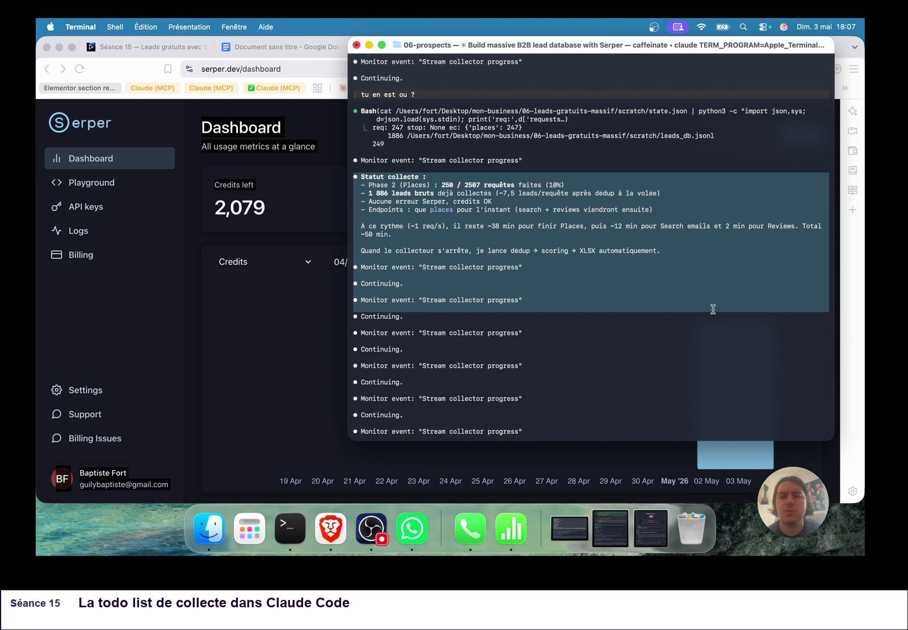
Tu en es où ? Donne-moi le nombre de requêtes faites, les crédits restants, les leads bruts, les leads dédupliqués, les emails trouvés, et la prochaine étape.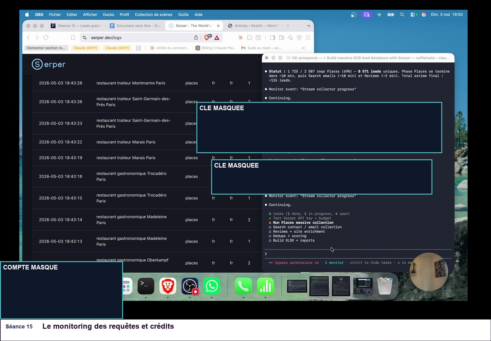
La déduplication est obligatoire
Un restaurant peut apparaître dans Places, Search, Pappers, un annuaire et son propre site. Je ne veux pas cinq lignes. Je veux une seule fiche enrichie avec toutes les sources.
- Fusion par CID.
- Sinon domaine normalisé.
- Sinon email.
- Sinon téléphone.
- Sinon nom + ville + adresse.
Le domaine normalisé évite les doublons
Je retire `https://`, `www.` et le slash final. `https://www.exemple.fr/` et `exemple.fr` doivent être considérés comme la même entreprise. Cette petite règle change beaucoup sur les gros fichiers.
https://www.restaurant.fr/ et restaurant.fr créent deux lignes.
restaurant.fr devient la clé commune de fusion.
Les emails doivent rester plausibles
Je garde surtout les emails génériques publics : contact@, bonjour@, hello@, reservation@, commercial@. Je ne veux pas de données personnelles sensibles. Si un email semble cassé, je le marque à vérifier.
Un email visible dans un snippet peut être incomplet. Vérifie les meilleurs leads avant d'envoyer.
Le téléphone complète l'email
Certains restaurants n'ont pas d'email public, mais ils ont un téléphone. Je ne jette pas ces leads. Je les classe dans un onglet séparé et je décide plus tard s'ils valent un appel, un SMS professionnel ou une autre méthode.
Prêt pour séquence écrite.
À traiter autrement.
Contact direct possible.
Peut remplacer l'email.
fit_score mesure l'alignement
Le fit_score regarde si le lead appartient au bon segment, à la bonne zone, avec un budget probable, une taille intéressante et sans mauvais fit évident. C'est le score de base.
| Critère | Points |
|---|---|
| Segment prioritaire | +8 |
| Zone prioritaire | +5 |
| Taille ou multi-sites | +5 |
| Budget probable | +4 |
| Pas exclu | +3 |
pain_score mesure le problème visible
Le pain_score augmente quand les avis, le site ou les pages montrent une douleur exploitable. Exemple : beaucoup d'avis, réservation compliquée, appels non répondus, page groupe, frustration récente.
+10
+5
+5
+5
reachability_score mesure la facilité de contact
Un bon lead doit être joignable. Je donne plus de points à un email direct, puis au téléphone, au formulaire, à LinkedIn et au site actif. Ce score évite de mettre trop haut une entreprise impossible à contacter.
| Signal | Points |
|---|---|
| Email direct | +8 |
| Téléphone | +4 |
| Formulaire | +3 |
| +3 | |
| Site actif | +2 |
maturity_score mesure la maturité digitale
Une entreprise déjà équipée comprend mieux la valeur d'un outil IA. Outil de réservation, site propre, activité sociale, multi-sites et avis nombreux sont des signaux utiles.
timing_score mesure le moment
Le bon lead au mauvais moment répond peu. Je cherche donc les signaux récents : ouverture, recrutement, événement, avis récents, page privatisation ou contenu mis à jour.
Besoin d'organisation.
Croissance ou manque.
Demande ponctuelle.
Problème actif.
La classe donne la priorité
Le priority_score additionne les scores. Je classe ensuite A+, A, B, C ou D. Je ne contacte pas tout le fichier. Je commence par A+ et A, puis j'observe la réponse du marché.
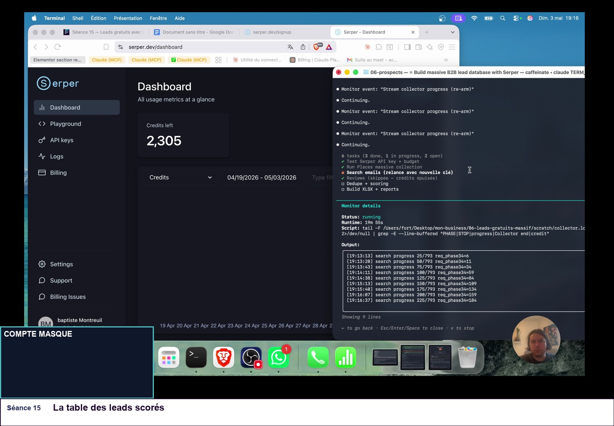
| Classe | Score | Action |
|---|---|---|
| A+ | 80-100 | Contact prioritaire |
| A | 65-79 | Très bon lead |
| B | 50-64 | À garder |
| C/D | <50 | Bas ou mauvais fit |
L'angle personnalisé vient des signaux
Je ne veux pas envoyer “bonjour, je fais de l'IA”. Je veux un message relié au lead : avis, réservation, privatisation, téléphone, groupe, site, ville ou segment. Le fichier doit proposer un angle court.
À partir des 30 meilleurs leads A+/A, prépare 3 angles de message courts. Utilise le segment, la ville, le site, les avis et les signaux de douleur. Ne fais pas un message générique.L'Excel devient l'outil de décision
Le classeur doit être lisible : filtres, onglets, colonnes figées, couleurs par classe, score descendant. Je dois pouvoir ouvrir le fichier et savoir quoi faire en moins de cinq minutes.
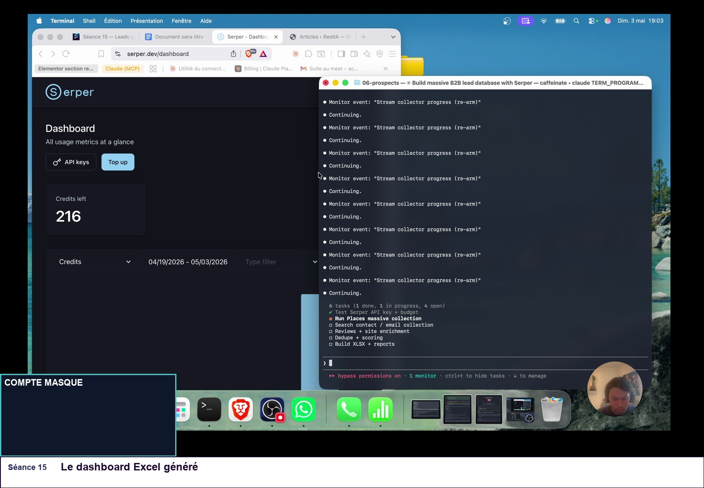
Le meilleur export n'est pas le plus rempli. C'est celui qui te permet de décider vite.
J'ouvre le fichier, je ne fais pas confiance au message final
Quand l'agent annonce que c'est terminé, j'ouvre le XLSX. Je regarde les onglets, les compteurs, les classes, les colonnes et les graphiques. Le message final est utile, mais le fichier est la preuve.
Le dashboard donne une vue rapide
Je regarde le nombre de leads bruts, leads dédupliqués, avec email, sans email, avec téléphone, avec website et les classes. Si les chiffres sont incohérents, je retourne dans le rapport.
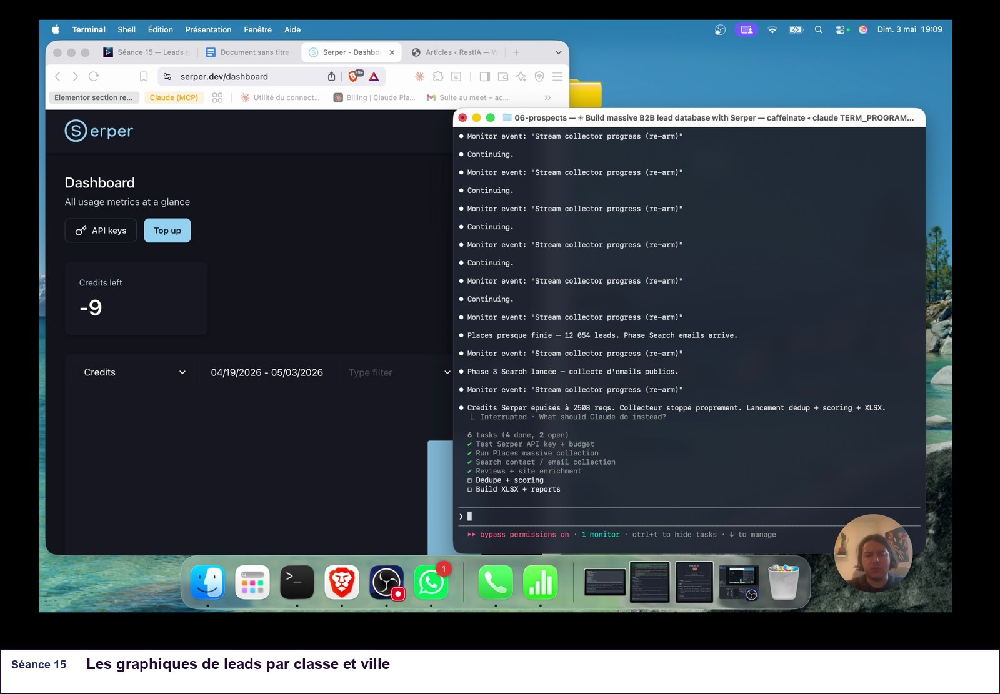
Les bruts sont supérieurs aux dédupliqués.
Les A+/A sont minoritaires mais exploitables.
Le nombre d'emails n'est pas inventé.
Les villes et segments ont du sens.
All Leads doit rester lisible
Une grosse base devient vite illisible. Les colonnes importantes doivent être au début : classe, score, nom, segment, site, email, téléphone, ville, sources, pain signals, angle et next action.
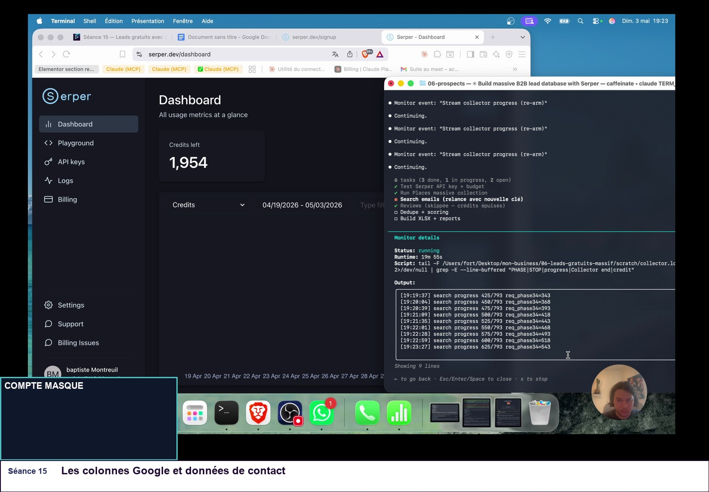
| Colonne | Question |
|---|---|
| priority_class | Qui contacter d'abord ? |
| Comment contacter ? | |
| source_urls | Quelle preuve ? |
| pain_signals | Pourquoi ce lead ? |
| next_action | Que faire maintenant ? |
Je sépare avec email et sans email
Les leads sans email ne sont pas inutiles. Ils demandent juste une autre action. En séparant les onglets, je peux lancer une séquence email sans mélanger les lignes incomplètes.
Priorité séquence écrite.
Recherche complémentaire.
Appel possible.
Contrôle manuel d'abord.
Les A+ et A passent en revue manuelle
Je ne contacte pas automatiquement 500 entreprises dès la première base. Je prends les 30 meilleurs leads, je vérifie les sites, les emails, les signaux et les angles. Ensuite seulement je prépare la première vague.
- Filtrer A+ et A.
- Vérifier 30 lignes.
- Corriger les emails douteux.
- Préparer 10 messages.
- Mesurer les réponses.
Les logs Serper vérifient la consommation
Je consulte les logs pour voir les requêtes effectuées. Si le fichier annonce 3 000 appels mais que Serper montre autre chose, il faut investiguer. Les logs servent aussi à comprendre les requêtes qui coûtent le plus.
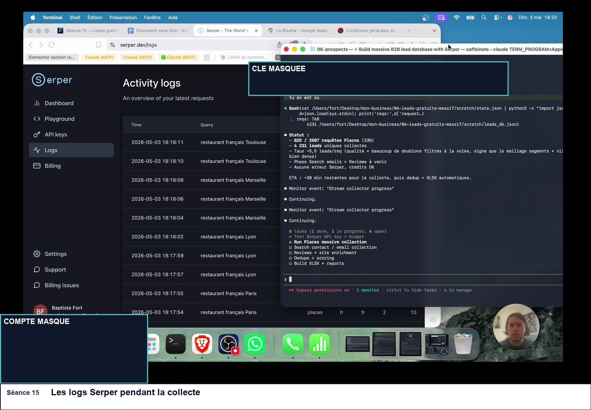
Les logs ne sont pas décoratifs. Ils te disent ce qui a vraiment été consommé.
Les erreurs fréquentes à éviter
La séance montre un système puissant, mais les erreurs restent simples : cible trop large, clé publiée, doublons, source absente, scoring flou, messages génériques, ou fichier trop lourd sans onglets utiles.
Si ton fichier est énorme mais que tu ne sais pas quoi faire demain matin, il n'est pas encore bon.
Je vérifie les secrets avant publication
Avant de pousser le support, je cherche les clés dans les fichiers texte, le HTML, les transcriptions et les images. Les visuels sensibles sont masqués. La formation doit montrer la méthode, pas exposer un accès API.
Recherche texte de la clé.
Images sensibles masquées.
Placeholder dans les prompts.
Vidéo non publiée.
Repo public limité aux fichiers utiles.
Je contacte par vagues
Une base de leads n'est pas une excuse pour spammer. Je commence petit : 10 à 30 leads, messages propres, suivi des réponses, puis ajustement. La qualité du retour compte plus que le volume envoyé.
10 à 30 leads vérifiés.
Réponses, refus, intérêt.
Angle, cible, offre.
Plus large après apprentissage.
Je peux réutiliser la méthode sur un autre marché
La vraie valeur de la séance, ce n'est pas seulement le fichier restauration. C'est la méthode : comprendre, requêter, enrichir, dédupliquer, scorer, exporter, vérifier, contacter. Tu peux la réutiliser pour un autre secteur en changeant les fichiers de départ et la matrice.
Je recommence à zéro pour chaque marché.
Je garde le système et je change l'ICP, les segments, les villes et les douleurs.
Le premier test Search doit rester petit
Je teste Search avec un payload court avant de partir sur un run massif. Si le résultat ne contient pas de contacts, je corrige les requêtes. Un petit test évite une grosse erreur. Je garde toujours une preuve simple : un fichier, une requête, une source, un chiffre ou une capture. C'est cette preuve qui rend la méthode réutilisable.
Ne saute pas cette logique. Sur une grosse base, les petites règles évitent les gros fichiers inutilisables.
Le premier test Places valide la catégorie
Je teste Places sur une ville connue. Je regarde si les catégories sont pertinentes. Si Serper sort trop de hors sujet, je change les termes de recherche. Je garde toujours une preuve simple : un fichier, une requête, une source, un chiffre ou une capture. C'est cette preuve qui rend la méthode réutilisable.
Ne saute pas cette logique. Sur une grosse base, les petites règles évitent les gros fichiers inutilisables.
La langue et le pays comptent
Pour un marché français, je règle `gl` et `hl` en `fr`. Je peux aussi préciser la ville dans `location`. Ça évite des résultats hors pays ou mal localisés. Je garde toujours une preuve simple : un fichier, une requête, une source, un chiffre ou une capture. C'est cette preuve qui rend la méthode réutilisable.
Ne saute pas cette logique. Sur une grosse base, les petites règles évitent les gros fichiers inutilisables.
Je limite Reviews aux meilleurs leads
Reviews coûte des appels. Je ne le lance pas sur tout. Je le garde pour les fiches qui ont un CID et un premier score intéressant. Je garde toujours une preuve simple : un fichier, une requête, une source, un chiffre ou une capture. C'est cette preuve qui rend la méthode réutilisable.
Ne saute pas cette logique. Sur une grosse base, les petites règles évitent les gros fichiers inutilisables.
Les sources verticales sont des compléments
Pappers, Societe.com, PagesJaunes ou LinkedIn aident à enrichir. Mais je ne base pas toute la collecte dessus, car les doublons peuvent exploser. Je garde toujours une preuve simple : un fichier, une requête, une source, un chiffre ou une capture. C'est cette preuve qui rend la méthode réutilisable.
Ne saute pas cette logique. Sur une grosse base, les petites règles évitent les gros fichiers inutilisables.
Je surveille le taux de nouveaux leads
La question n'est pas seulement combien de résultats arrivent. La vraie question est combien sont nouveaux après déduplication. Je garde toujours une preuve simple : un fichier, une requête, une source, un chiffre ou une capture. C'est cette preuve qui rend la méthode réutilisable.
Ne saute pas cette logique. Sur une grosse base, les petites règles évitent les gros fichiers inutilisables.
Je garde les villes pauvres en observation
Si une ville sort peu de leads, elle n'est pas forcément inutile. Elle peut demander d'autres synonymes ou une recherche par quartier. Je garde toujours une preuve simple : un fichier, une requête, une source, un chiffre ou une capture. C'est cette preuve qui rend la méthode réutilisable.
Ne saute pas cette logique. Sur une grosse base, les petites règles évitent les gros fichiers inutilisables.
Le scoring doit être explicable
Si je ne peux pas expliquer pourquoi un lead est A, le scoring est mauvais. Chaque score doit correspondre à une règle simple. Je garde toujours une preuve simple : un fichier, une requête, une source, un chiffre ou une capture. C'est cette preuve qui rend la méthode réutilisable.
Ne saute pas cette logique. Sur une grosse base, les petites règles évitent les gros fichiers inutilisables.
Le mauvais fit doit descendre vite
Un lead hors cible ne doit pas rester haut parce qu'il a un email. L'alignement business passe avant la facilité de contact. Je garde toujours une preuve simple : un fichier, une requête, une source, un chiffre ou une capture. C'est cette preuve qui rend la méthode réutilisable.
Ne saute pas cette logique. Sur une grosse base, les petites règles évitent les gros fichiers inutilisables.
Je vérifie les emails avant envoi
Les emails publics peuvent être obsolètes. Avant une vague, je contrôle les meilleurs leads et je retire les adresses douteuses. Je garde toujours une preuve simple : un fichier, une requête, une source, un chiffre ou une capture. C'est cette preuve qui rend la méthode réutilisable.
Ne saute pas cette logique. Sur une grosse base, les petites règles évitent les gros fichiers inutilisables.
Je ne confonds pas rapport et décision
Le rapport explique la collecte. L'Excel décide l'action. Les deux sont utiles, mais ils ne servent pas au même moment. Je garde toujours une preuve simple : un fichier, une requête, une source, un chiffre ou une capture. C'est cette preuve qui rend la méthode réutilisable.
Ne saute pas cette logique. Sur une grosse base, les petites règles évitent les gros fichiers inutilisables.
La suite logique est la prospection
Une fois la base prête, je peux préparer les messages, les séquences, les suivis et les relances. La séance suivante peut transformer les leads en pipeline. À partir de là, je ne cherche pas à envoyer le plus de messages possible. Je veux une première vague propre, mesurable et facile à corriger. La base sert à choisir les bons contacts, pas à envoyer au hasard.
Je pars des leads A+/A, avec ville, segment, site, email ou signal utile.
Je sélectionne 10 à 30 contacts. C'est assez pour apprendre sans perdre le contrôle.
Je m'appuie sur un vrai signal : avis, site incomplet, absence de réservation, besoin SEO ou problème visible.
Je note les réponses, les refus, les questions et les objections avant d'élargir.
- Choisis les 30 meilleurs leads A+/A dans le fichier.
- Vérifie vite le site, l'email, la ville et le signal principal.
- Prépare trois angles de message courts avec Claude Code ou Codex.
- Envoie une première vague propre, sans automatiser trop tôt.
- Corrige l'angle avant de lancer une vague plus grande.
Le prompt maître complet
Le prompt maître est volontairement complet. Je ne le lis pas comme un roman : je vérifie le rôle, les fichiers sources, la sécurité de la clé, les phases de collecte, le scoring et les livrables. Tu peux le reprendre, mais tu dois toujours adapter les chemins, le secteur, les villes et les règles de score.
Je donne à l'agent une posture claire : growth engineer B2B senior, orienté données et fichiers commerciaux.
Je force l'agent à repartir des fichiers existants. Il ne travaille pas dans le vide.
Je masque la clé Serper dans le support. Une clé API ne doit jamais finir dans une page publique.
Je demande un XLSX, un CSV, un rapport MD, un résumé chiffré et une preuve de contrôle.
Prompt long : le bloc est limité en hauteur pour garder la page lisible. Tu peux scroller dedans ou cliquer sur Copier pour tout récupérer.
Tu es un growth engineer B2B senior, expert en prospection locale, scraping propre de donnees publiques, scoring de leads et utilisation avancee de l'API Serper.
MISSION
Tu dois construire une base de leads massive, dedupliquee, scoree et actionnable pour mon business.
Tu pars obligatoirement de mes livrables existants :
@~/Desktop/mon-business/01-etude-marche/etude-marche.md
@~/Desktop/mon-business/02-site/audits-seo/strategie.md
Si le fichier existe, lis aussi :
@~/Desktop/mon-business/00-brand/brandbook-mini.md
Tu dois d'abord comprendre ma cible, mon positionnement, mes cas d'usage, mes zones prioritaires, mes concurrents, mes mots-cles, mes prompts GEO et mes trous de marche.
Tu n'as pas le droit d'appeler Serper avant d'avoir produit un brief cible clair.
SECURITE CLE API
La cle Serper est donnee directement dans ce prompt sous forme de variable :
SERPER_API_KEY = "COLLE_TA_CLE_SERPER_ICI"
Utilise cette variable pour tous les appels Serper.
Pas besoin de lire une variable d'environnement.
Pas besoin de demander un export shell.
Ne stocke jamais la cle dans les fichiers de sortie.
Ne l'affiche jamais dans les logs.
Une fois les credits consommes, la cle sera revoquee.
ENDPOINTS SERPER
Base URL : https://google.serper.dev
Headers :
X-API-KEY: SERPER_API_KEY
Content-Type: application/json
Endpoints autorises :
- POST /places
- POST /search
- POST /reviews
- POST /autocomplete
- POST /news uniquement si utile
REGLES DE DONNEES
- Utilise uniquement des donnees publiques B2B : site d'entreprise, page contact, Google Business, annuaires publics, LinkedIn Company public, mentions legales.
- Ne contourne aucun login, captcha, paywall ou restriction.
- Ne collecte pas de donnees personnelles sensibles.
- Priorise les emails generiques publics : contact@, bonjour@, hello@, reservation@, commercial@.
- Si tu trouves un nom de dirigeant public, garde-le seulement comme "decision_maker_public_guess" avec la source.
- Chaque lead doit garder ses sources : endpoint, requete, URL, date de collecte.
OBJECTIF QUANTITATIF
Tu dois chercher le maximum de leads possible, pas seulement 20 exemples.
Tu fais plusieurs tours.
Tu t'arretes uniquement si :
1. deux tours consecutifs generent moins de 10 % de nouveaux leads dedupliques,
2. ou tu atteins le plafond prudent de 250 appels Serper,
3. ou tu atteins 1500 leads bruts / 500 leads qualifies.
Ne gaspille pas les appels :
- cache chaque reponse JSON dans raw/
- ne relance jamais deux fois exactement la meme requete
- tiens un fichier queries-ledger.csv
- avant chaque appel, verifie si la reponse existe deja dans raw/
STRUCTURE A CREER
Cree ce dossier :
~/Desktop/mon-business/06-leads-gratuits/
Puis cree :
- brief-cible-leads.md
- strategie-serper.md
- queries-ledger.csv
- leads-serper.xlsx
- leads-serper.csv
- leads-serper.md
- raw/search/
- raw/places/
- raw/reviews/
- raw/autocomplete/
- scratch/
PHASE 0 - COMPREHENSION SANS API
Lis l'etude de marche et la strategie SEO/GEO.
Produis dans brief-cible-leads.md :
1. Offre vendue en 5 lignes maximum.
2. ICP prioritaire :
- secteur
- taille
- zone
- budget probable
- decideur
- maturite digitale
3. Segments prioritaires classes de P1 a P5.
4. Segments exclus.
5. 10 douleurs business detectables publiquement.
6. 10 signaux d'achat detectables publiquement.
7. 10 signaux de maturite digitale.
8. 10 signaux de mauvais fit.
9. Liste initiale des villes / zones.
10. Liste initiale des categories Google Places.
Exemple de raisonnement attendu :
Si l'etude dit "agence IA restauration", "gerants de restaurants", "petites chaines 3-10 sites", alors les segments prioritaires peuvent etre :
- brasseries urbaines
- restaurants independants avec beaucoup d'avis
- bistronomie / gastronomie
- groupes de restaurants locaux
- traiteurs / privatisations
Mais tu dois deduire ces segments depuis mes fichiers, pas recopier aveuglement cet exemple.
PHASE 1 - MATRICE DE REQUETES
Cree strategie-serper.md avec une matrice complete :
A. Requetes Places
Format :
{categorie} {ville}
{categorie} {arrondissement}
{categorie} proche {quartier}
{categorie} {zone premium}
{categorie} {zone touristique}
B. Requetes Search contact
Format :
"{segment}" "{ville}" "contact"
"{segment}" "{ville}" "contact@"
"{segment}" "{ville}" "mentions legales"
"{segment}" "{ville}" "SIRET"
"{segment}" "{ville}" "reservation"
"{segment}" "{ville}" "privatisation"
"{nom douleur}" "{segment}" "{ville}"
C. Requetes Search sources verticales
site:pagesjaunes.fr "{segment}" "{ville}"
site:pappers.fr "{segment}" "{ville}"
site:societe.com "{segment}" "{ville}"
site:linkedin.com/company "{segment}" "{ville}"
site:instagram.com "{segment}" "{ville}"
D. Requetes de maturite
"Réserver avec Zenchef" "{ville}" "{segment}"
"TheFork" "{ville}" "{segment}"
"privatisation" "{ville}" "{segment}"
"click and collect" "{ville}" "{segment}"
"recrute" "{ville}" "{segment}"
"ouverture" "{ville}" "{segment}"
E. Requetes de douleur
"impossible de joindre" "{segment}" "{ville}"
"reservation telephone" "{segment}" "{ville}"
"avis google" "{segment}" "{ville}"
"privatisation" "contact" "{segment}" "{ville}"
"groupe" "devis" "{segment}" "{ville}"
Pour chaque requete, ajoute :
- endpoint
- payload JSON
- objectif
- priorite P1/P2/P3
- segment
- zone
- cout estime : 1 appel
PHASE 2 - COLLECTE PLACES LARGE
Lance /places sur les couples categorie x zone P1.
Payload type :
{
"q": "restaurants lyon",
"gl": "fr",
"hl": "fr",
"location": "Lyon, Auvergne-Rhone-Alpes, France",
"num": 10,
"page": 1
}
Pagination :
- teste page 1, 2, 3 par couple P1
- continue jusqu'a page 5 si chaque page apporte au moins 4 leads nouveaux
- stoppe ce couple si la page apporte moins de 4 leads nouveaux ou beaucoup de doublons
Pour chaque place, capture :
- title
- category
- address
- city
- postal_code si disponible ou deductible
- latitude
- longitude
- rating
- ratingCount
- priceLevel
- website
- cid
- source_query
- source_endpoint
- raw_file
PHASE 3 - COLLECTE SEARCH CONTACT
Lance /search sur les requetes contact P1 et P2.
Payload type :
{
"q": "\"restaurant\" \"lyon\" \"contact@\"",
"gl": "fr",
"hl": "fr",
"num": 10,
"page": 1
}
Pagination :
- page 1 a 3 pour P1
- page 1 seulement pour P2 au depart
- relance P2 si le taux de leads nouveaux est bon
Depuis organic[], extrais :
- title
- link
- snippet
- position
- emails visibles dans snippet
- telephones visibles dans snippet
- indices : contact, mentions legales, devis, reservation, privatisation, groupe, recrutement, ouverture
Important :
Les snippets Serper peuvent contenir directement l'email. Utilise une regex email.
Normalise les emails :
- contact [a] domaine.fr -> contact@domaine.fr
- contact(at)domaine.fr -> contact@domaine.fr
- espaces autour du @ -> correction
PHASE 4 - ENRICHISSEMENT SITE WEB
Pour les leads avec website :
- visite uniquement les pages publiques evidentes si accessible sans login :
/contact
/contactez-nous
/mentions-legales
/reservation
/privatisation
/groupes
- utilise des requetes HTTP simples si possible
- si le site bloque, ne force pas
Extrais :
- email public
- telephone public
- formulaire contact present oui/non
- offre privatisation oui/non
- multi-sites oui/non
- outil reservation detecte : Zenchef, TheFork, Resy, SevenRooms, Formitable, autre
- liens sociaux publics
PHASE 5 - ENRICHISSEMENT REVIEWS SUR TOP LEADS
Ne lance /reviews que sur les leads qui ont un cid ET un premier score interessant.
Maximum : top 100 au premier run.
Payload type :
{
"cid": "CID",
"gl": "fr",
"hl": "fr",
"num": 10
}
Analyse les snippets d'avis avec ce dictionnaire de douleurs, a adapter a mon marche :
- telephone / joindre / appel / repond pas
- reservation / annulation / no-show / attente
- service lent / organisation / erreur
- avis negatif / mauvaise experience / remboursement
- groupe / privatisation / evenement
- langue / touristes / anglais
Pour chaque lead, cree :
- pain_signals : liste courte
- pain_evidence : 1 a 3 extraits courts paraphrases
- pain_score : 0-25
PHASE 6 - RECHERCHE DECIDEUR PUBLIC
Pour les meilleurs leads seulement, lance /search :
site:linkedin.com/in "{nom entreprise}" "{ville}" gerant
site:linkedin.com/in "{nom entreprise}" "{ville}" fondateur
site:linkedin.com/company "{nom entreprise}"
"{nom entreprise}" "{ville}" "gerant"
"{nom entreprise}" "{ville}" "dirigeant"
Ne force rien.
Si le decideur n'est pas public, mets N/A.
PHASE 7 - DEDUPLICATION
Deduplique avec ces cles, dans cet ordre :
1. cid Google Business
2. domaine normalise
3. email
4. telephone normalise
5. nom + ville + adresse approx
Normalisation :
- retire https://, www., slash final
- emails en minuscules
- telephone FR au format +33 si possible
- nom sans accents pour comparaison
Garde toutes les sources dans source_urls et source_queries.
Ne supprime pas l'information ; fusionne les champs.
PHASE 8 - SCORING
Cree ces scores :
fit_score /25
- segment prioritaire : +8
- zone prioritaire : +5
- taille/multi-sites probable : +5
- budget probable : +4
- pas dans segment exclu : +3
pain_score /25
- avis avec douleur explicite : +10
- beaucoup d'avis donc enjeu reputation : +5
- signaux reservation/appels/privatisation : +5
- probleme recent : +5
reachability_score /20
- email public direct : +8
- telephone public : +4
- formulaire contact : +3
- LinkedIn company/personne publique : +3
- site actif : +2
maturity_score /15
- outil reservation deja en place : +4
- site propre : +3
- activite sociale : +3
- multi-sites : +3
- avis nombreux : +2
timing_score /15
- ouverture/recrutement/evenement recent : +5
- avis recents nombreux : +4
- page privatisation/groupe : +3
- contenu actualise : +3
priority_score = fit_score + pain_score + reachability_score + maturity_score + timing_score
Classe :
- A+ : 80-100, a contacter en priorite
- A : 65-79
- B : 50-64
- C : 35-49
- D : <35 ou mauvais fit
PHASE 9 - BOUCLE DE SATURATION
Apres les 4 premiers tours, analyse les trous :
- villes pauvres en leads
- segments qui convertissent bien
- requetes qui donnent beaucoup de doublons
- requetes qui donnent beaucoup d'emails
- categories Google Places sous-exploitees
- sources verticales rentables
Genere un nouveau batch de requetes avec /autocomplete et tes observations.
Relance les meilleurs angles.
Arrete apres deux tours consecutifs sous 10 % de nouveaux leads dedupliques.
PHASE 10 - LIVRABLES
Genere leads-serper.xlsx avec ces onglets :
1. README
- date
- fichiers sources
- nombre appels Serper
- nombre leads bruts
- nombre leads dedupliques
- nombre leads A+/A/B
- limites
2. LEADS
Colonnes :
lead_id
priority_class
priority_score
fit_score
pain_score
reachability_score
maturity_score
timing_score
company_name
segment
category
website
domain
email
phone
address
city
postal_code
google_rating
google_review_count
cid
decision_maker_public_guess
linkedin_company_url
source_urls
source_queries
pain_signals
trigger_signals
detected_tools
personalized_angle
suggested_offer
outreach_message_1
outreach_message_2
next_action
status
3. PLACES_RAW
4. SEARCH_RAW
5. REVIEWS_SIGNALS
6. QUERIES_LEDGER
7. SCORING_RULES
8. OUTREACH_ANGLES
Mise en forme Excel :
- filtres actifs
- colonnes figees
- couleurs par priority_class
- largeur lisible
- onglet LEADS trie par priority_score descendant
Genere aussi leads-serper.csv avec l'onglet LEADS.
Genere leads-serper.md avec :
- synthese executive
- strategie utilisee
- top segments
- top zones
- top 30 leads A+
- exemples d'angles personnalises
- ce qui a marche / pas marche
- prochaines requetes a relancer
- limites et risques
QUALITE OBLIGATOIRE
Avant de finir :
- verifie que chaque lead A+/A a au moins une source
- verifie qu'il n'y a pas de doublons evidents
- verifie que les emails sont plausibles
- verifie que les priority_score sont entre 0 et 100
- verifie que queries-ledger.csv contient chaque appel Serper
- verifie que les fichiers raw existent
MESSAGE FINAL ATTENDU
A la fin, reponds uniquement :
"Extraction terminee.
Fichiers crees :
- ~/Desktop/mon-business/06-leads-gratuits/leads-serper.xlsx
- ~/Desktop/mon-business/06-leads-gratuits/leads-serper.csv
- ~/Desktop/mon-business/06-leads-gratuits/leads-serper.md
Leads bruts : X
Leads dedupliques : Y
A+/A : Z
Appels Serper : N
Meilleurs segments : ..."Je copie les fichiers au bon endroit
Quand le run génère les fichiers dans un dossier temporaire, je demande à l'agent de les copier dans `06-prospects`. Ce n'est pas un détail. Si le fichier final est au mauvais endroit, tu vas le perdre.
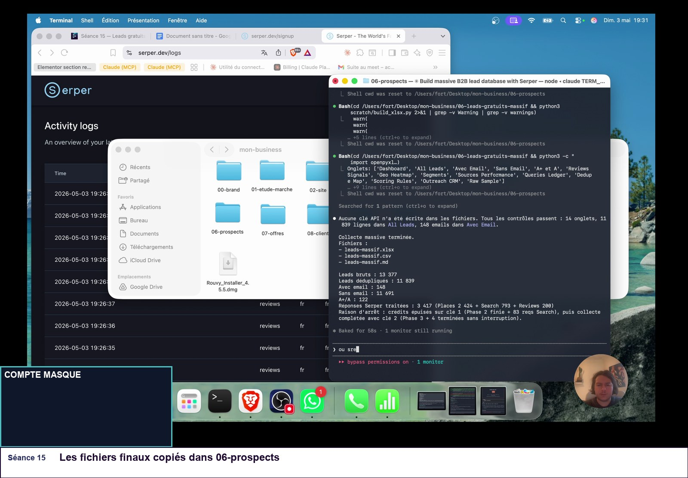
Où se trouve le fichier XLSX ? Peux-tu le copier dans ~/Desktop/mon-business/06-prospects/ avec le CSV et le rapport MD ?Ce que tu dois garder
L'étude de marché dit qui viser. L'audit SEO/GEO dit quels problèmes vendre. Serper trouve les entreprises. La déduplication nettoie. Le scoring décide l'ordre. Le fichier Excel transforme tout ça en actions. Si tu gardes cette chaîne, tu peux construire une base de prospects sérieuse sans acheter un fichier opaque.
Avant API.
Avec matrice.
Avec déduplication.
Avec critères.
Avec preuves.
Par vagues.
{kind=link}
{kind=link}
{kind=link}
{kind=link}
{kind=link}
{kind=link}
{kind=link}
{kind=link}
{kind=link}
{kind=link}
{kind=link}
{kind=link}
{kind=link}
{kind=link}
{kind=link}
{kind=link}
{kind=link}
{kind=link}
{kind=link}
{kind=link}
{kind=link}
{kind=link}
{kind=link}
{kind=link}